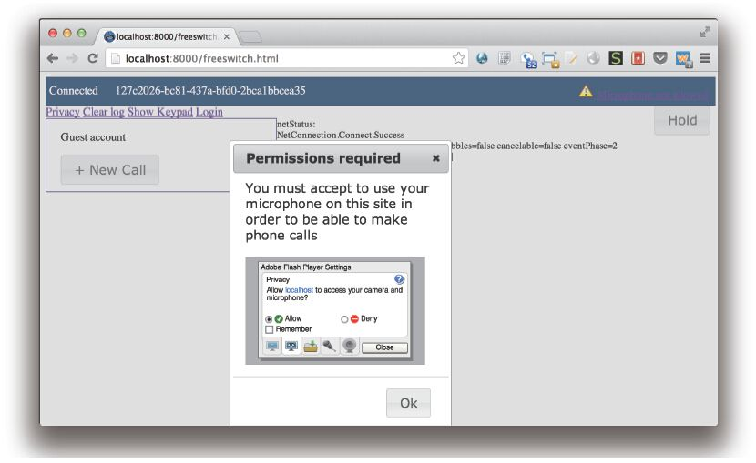
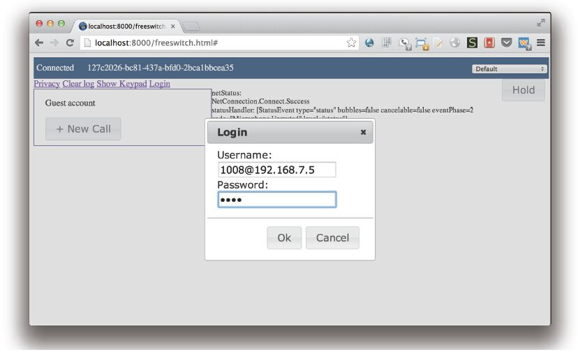
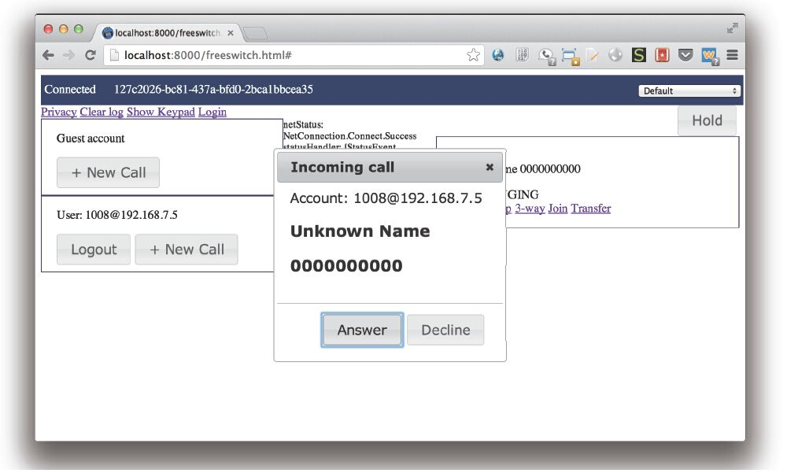
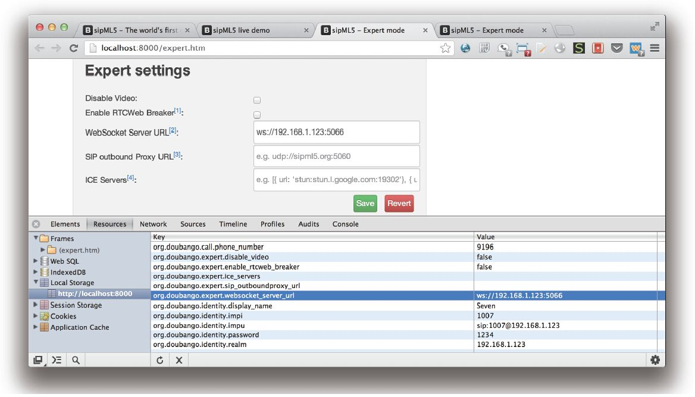
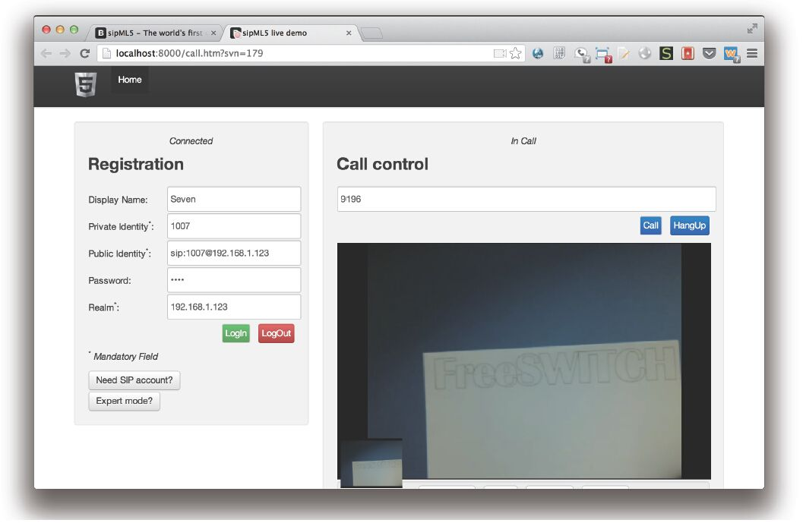

15.9 在Web浏览器中打电话
多年来，随着互联网的发展，能在网页上打电话已经成为人们的一个梦想。当然，这些年来，人们也实现了一些方案，这些方案一般都是基于浏览器的插件实现的，如基于IE浏览器的ActiveX插件、Java Applect插件以及Flash插件等。其中，基于Flash插件的产品和解决方案由于其跨平台性和兼容性比较好，使用比较广泛，如比较著名的Red5 Media Server [1] 及Wowza Media Server [2] 等。
然而，随着HTML5技术的发展以及几年前苹果公司声明在iOS设备中不再支持Flash，Flash的使用量开始下滑，并且普遍认为前景不好。而此时，谷歌提出的基于HTML5的WebRTC实时通信技术却受到了大家的关注，各在线通信平台也纷纷推出支持WebRTC的实时通信方案。
但无论如何，现在的IE浏览器不支持WebRTC还是铁定的事实，所以我们还是需要Flash。下面我们就来看一下FreeSWITCH对Flash和WebRTC的支持是如何实现的。
15.9.1 Flash
基于Flash的实时多媒体通信是基于Adobe的RTMP协议进行的。FreeSWITCH中通过mod_rtmp实现了一个基于RTMP协议的Endpoint，可以支持用Flash实现的软电话。如我们经常讲的一样，虽然Flash前景不再被看好，但是在一定范围内它还将顽强地存在。而且，作为有别于SIP模块（“mod_sofia”）的另外一个Endpoint，也很有参考和借鉴意义。
在FreeSWITCH源代码目录中使用如下命令即可安装该模块：
# make mod_rtmp-install
在FreeSWITCH控制台上使用load mod_rtmp命令加载该模块后，它将监听RTMP协议默认的1935端口，并等待客户端连接，使用如下命令将可以显示该模块的有关状态：
freeswitch> rtmp status
default tcp:0.0.0.0:1935 profile
上面的命令显示了有一个RTMP的Profile运行在1935端口上。
FreeSWITCH源代码中也实现了一个Flash版的软电话，并提供了客户端的例子。客户端及例子页面的源代码在FreeSWITCH源代码目录的clients/flex/目录中。要运行该例子，我们首先要进行一些修改，将freeswitch.html中的rtmp_url参数改为指向我们自己的RTMP服务器。如原来的参数值如下：
rtmp_url: 'rtmp://my.ip.address.here/phone'
笔者在测试时修改后的值如下（它指向笔者本机上的RTMP服务，即我们上面打开的1935端口上的服务）：
rtmp_url: 'rtmp://127.0.0.1/phone'
当然，为了能访问该HTML页面，我们还需要把这些相关的Web资源都放到一个Web服务器上运行。Python语言提供了一个简单的方案用于运行一个简单的Web服务器，我们可以在客户端的源代码目录中使用下载命令启动一个简单的HTTP Server，它将默认运行在8000端口上。
# python -m SimpleHTTPServer
然后，打开浏览器，访问与该服务器对应的网址，如http://localhost:8000/freeswitch.html，就可以看到图15-8所示的界面了。

图15-8 Flash测试页面初始界面
其中，可以看到在最左上角有Connected字样，表示我们已经跟RTMP服务器（即FreeSWITCH）连接上了。但是，由于该网页上的Flash软电话需要访问本地的麦克风，由于网页的安全性考虑，系统弹出一个窗口以提示用户是否允许访问这些设备。这里我们选择允许（Allow）就可以了。
接下来，单击Login链接，输入用户及密码进行登录（即注册），笔者的输入如图15-9所示。

图15-9 将Flash软电话登录到FreeSWITCH上
其中，“1008@192.168.7.5”为默认用户目录的配置，相当于“user@domain”，密码也是默认的“1234”。即“mod_rtmp”也跟“mod_sofia”一样使用用户目录中的配置对用户进行验证。
注册成功后，我们就可以单击“New Call”按钮输入一个号码拨打电话了，作为第一个测试我们可以拨打9196。
当然，Flash电话注册后，它是一个真正的电话，所以你也可以呼叫它。
回忆一下SIP中的注册，FreeSWITCH将记住客户端的Contact地址。在RTMP中也类似，每当有RTMP客户端向FreeSWITCH注册时，FreeSWITCH也记录该客户端的地址，如类似mod_sofia中的sofia_contat，mod_rtmp提供了一个rtmp_contact命令可以查询客户端的注册情况：
freeswitch rtmp_contact default/1008@192.168.7.5
rtmp/127c2026-bc81-437a-bfd0-2bca1bbcea35/1008@192.168.7.5
其中，default是RTMP Profile的名称。我们看到一个rtmp的呼叫字符串，然后就可以尝试呼叫它了：
freeswitch> originate rtmp/127c2026-bc81-437a-bfd0-2bca1bbcea35/1008@192.168.7.5 &echo
执行上述命令后，就会在浏览器中听到来话的提示音，并且可以看到如图15-10的来电提示页面。

图15-10 RTMP来电提示页面
测试成功后，就可以编辑如下的Dialplan让别的Flash电话或SIP电话呼叫到1008了：
<extension name="RTMP">
<condition field="destination_number" expression="^(1008)$">
<action application="bridge"
data="${rtmp_contact(default/$1@$${domain})}"/>
</condition>
</extension>
该Flash电话客户端提供源代码，也提供JavaScript API用于在HTML网页中调用，因而可以很方便地集成到其他Web系统中去。
15.9.2 WebRTC
WebRTC [3] 的全称是Web RealTime Communication，即基于Web的实时通信。实际上WebRTC提供了在浏览器中使用JavaScript API访问本地的声音和视频设备的手段。由于保护隐私和安全性的原因，浏览器在每次使用用户的声音或视频设备时都会询问是否允许。
 注意
注意
目前Chrome、FireFox以及Opera等浏览器实现了WebRTC。
值得注意的是，WebRTC仅提供了访问音视频设备这些媒体资源的方法，并没有规定信令是怎么走的。现有的例子大部分都使用了Google App Engine Channel API传输信息控制协议。另外一个可以传输信令的就是WebSocket [4] 。
WebSocket是HTML5最初提供的一种浏览器与服务器间进行双向全双工通讯的网络技术。大家熟知的HTTP协议仅能用于通过浏览器单向请求服务器资源，而为了能使服务器主动向浏览器客户端推送资源，人们想尽了办法，如使用Ajax轮循、HTTP长连接、Flash提供的Socket功能及IE中的ActiveX控件等。WebSocket的出现解决了这些连接的混乱，它可以直接使用浏览器提供的功能和API与后端建立双向的Socket连接，包括IE9在内的现代浏览器都支持WebSocket。
有了WebSocket以后，SIP的承载方式就又多了一个选择。大家都已经知道，SIP一般通过UDP承载，也可以通过TCP或TLS承载，而出现了WebSocket以后，它也可以承载SIP，这种技术就称为SIP over WebSocket [5] ，它目前还是一个IETF的草案。
信令和媒体都有了，我们就可以进行通信了。需要注意的是，浏览器中的视频编码有两个阵营。一个是以Google Chrome为代表的，它支持的视频格式是VP8；另一个是以Apple Safari为代表的，支持H264，而FireFox也支持H264。由于FreeSWITCH不支持转码，目前这两种视频还是不能互通。
另外，在写作本书时，JsSIP对FireFox的支持也不是很好，因而在以下的例子中我们都使用Chrome浏览器。
1.JsSIP
JsSIP [6] 是一个开源的社区项目。FreeSWITCH官方提供了基于JsSIP的WebRTC的例子，地址为https://webrtc.freeswitch.org/。
读者访问以上地址可以看到网页提示输入一个名字或分机号进行登录，实际上就是向FreeSWITCH注册。FreeSWITCH后台开启了accept-blind-auth，因而任何用户名均可以成功注册。
登录成功后就可以在“To”一栏输入号码进行呼叫了。如输入888就可以进行FreeSWITCH默认的会议系统；输入mcu可以进入一个由第三方MCU提供的视频会议系统等。
2.sipML5
sipML5 [7] 是由Doubango团队做出的SIP Over Websocket的开源实现。该项目可以在线试用，也可以在自己本地试用。sipML5的源代码是他们SVN维护的，使用以下命令可以将该项目检（checkout）到本地：
svn checkout http://sipml5.googlecode.com/svn/trunk/ sipml5-read-only
如果你使用Apache或Nginx Web服务器，可以把这些代码放到你的Web服务器目录下，然后在浏览器上访问。如果你的机器上有Python的话，可以使用它的SimpleHTTPServer模块很简单地启动一个Web服务器，如以下命令将启动一个简单的Web服务器 [8] ，默认使用8000端口：
cd sipml5-read-only
python -m SimpleHTTPServer
如果你想改变端口，如改到8888，则可以使用如下命令：
python -m SimpleHTTPServer 8888
打开你的浏览器，访问该服务器对应的端口，就能看到与sipml5.org同样的界面 [9] 。然后，单击“Enjoy our live demo”按钮就可以看到WebRTC电话的页面了。当然也可以尝试直接访问下面这个地址：
http://localhost:8000/call.htm
由于你是在自己的服务器上使用的，因此要先进入“Expert mode”，将“WebSocket Server URL”修改为你服务器WebSocket的监听地址，修改完毕后单击“Save”按钮保存。这些值将保存到本地浏览器的Local Storage里，因而也可以直接通过浏览器的调试模式修改这些值，如图15-11所示。

图15-11 在Expert模式进行设置
保存完上述设置后，即可以返回原先的call.htm页面。输入相关信息就可以注册（Login）了。图15-12显示了笔者填写的注册信息，并演示了注册后测试呼叫9196的情况。

图15-12 使用sipML5进行WebRTC视频呼叫
另外，FreeSWITCH官方也提供了sipml5的例子，设置起来比较简单。请参考：https://webrtc.freeswitch.org/sipml5/。
[1] 参见http://www.red5.org/。
[2] 参见http://www.wowza.com/。
[3] http://www.webrtc.org/。
[4] 参见http://zh.wikipedia.org/wiki/WebSocket http://tools.ietf.org/html/rfc6455。
[5] 注意，不要把WebSocket跟WebRTC混了，它们是完全不同的东西。参见http://datatracker.ietf.org/doc/draft-ietf-sipcore-sip-websocket/。
[6] 参见http://jssip.net/。
[7] 参见sipml5.org/。
[8] 本例是使用Python2的例子，如果使用的是Python3，则可以使用下列命令：“python3-m http.server”。
[9] 不过，作者在测试中发现，由于index.html页面引用了一个外部的JavaScript，而该地址在国内是打不开的，因而会导致打开这个页面很慢。要解决这个问题，可以在index.html中找到包含下面地址的行并把它删掉：https://apis.google.com/js/plusone.js。